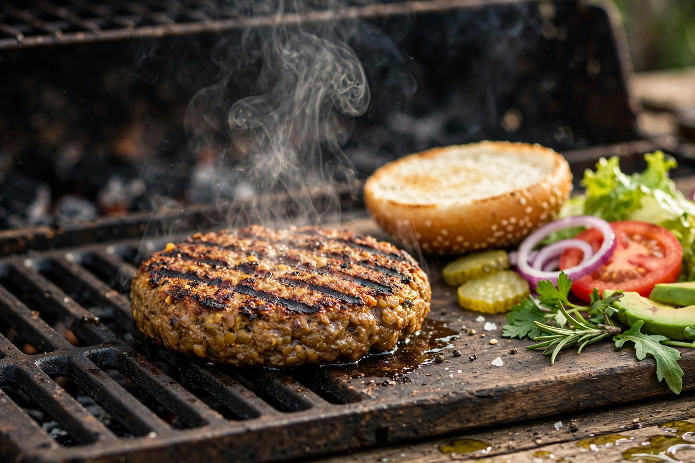

| Beyond Meat, Inc. | |
|---|---|
 | |
| Founded | 2009; Los Angeles, California, US |
| Founder | Ethan Brown |
| Headquarters | El Segundo, California |
| Products | Plant-based burgers, sausages, ground beef alternatives, chicken-style products |
| Nasdaq | BYND |
Beyond Meat, Inc. is an American producer of plant-based meat substitutes founded in 2009 by Ethan Brown. Based in El Segundo, California, the company aims to replicate the taste, texture and cooking behaviour of animal meat using plant proteins — principally pea protein — without genetically modified ingredients. Its products include the Beyond Burger, Beyond Sausage, Beyond Beef ground and plant-based chicken-style offerings, sold in grocery stores and restaurants in dozens of countries.
Ethan Brown, who had worked in the clean-energy sector, founded the company after licensing technology developed by University of Missouri researchers Fu-hung Hsieh and Harold Huff, who had spent years working on replicating the fibrous texture of meat from plant proteins using high-moisture extrusion. Early products (chicken-style strips) launched through Whole Foods Market in 2013. The Beyond Burger, launched in 2016, was sold in the meat case of supermarkets — a deliberate strategy to reach flexitarian meat-eaters rather than only vegetarians — and became a flagship of the new generation of plant-based meats.
Beyond Meat's initial public offering on 2 May 2019 was the first for a plant-based meat company and one of the most spectacular of the year: shares priced at $25 soared nearly 600% within three months, giving the firm a market capitalisation above $13 billion at its peak. The company signed partnerships with chains including A&W Canada, McDonald's (testing the McPlant line), KFC, Pizza Hut and Taco Bell. However, from 2021 onward the US plant-based meat category contracted, and Beyond Meat's revenue declined, losses mounted and its share price fell more than 95% from its peak; the company undertook successive restructurings, cost-cutting and refinancing while continuing product reformulations emphasising simpler ingredient lists and improved nutrition (for example, the avocado-oil-based Beyond IV platform).
Beyond products are built from pea (and in some formulations faba bean, mung bean or rice) protein isolates, structured by heating, cooling and pressure in extruders to align plant proteins into meat-like fibres. Fats such as canola, coconut and avocado oils provide juiciness; beetroot juice extract gives the burger its red colour and "bleeding" effect; and methylcellulose and other binders hold the product together. The company markets its process as using substantially less water and land and generating fewer greenhouse-gas emissions than conventional beef, citing life-cycle assessments, though critics debate the health profile of highly processed alternatives.